Копируем визуальный язык
Белый интерфейс, фиолетовый акцент, узкая иконная боковая панель, 54–58 px шапка, компактные фильтры, тёмные управляющие панели, плотные таблицы и семантическая заливка ячеек.
Переносим интерфейс и пользовательские сценарии Inferno максимально близко к оригиналу для всех нефинансовых WB-модулей. Наши API, мультикабинетность, расчёты, защита действий и данные сохраняются. Финансы и Ozon заморожены.
Белый интерфейс, фиолетовый акцент, узкая иконная боковая панель, 54–58 px шапка, компактные фильтры, тёмные управляющие панели, плотные таблицы и семантическая заливка ячеек.
РНП, воронка/репрайсер, рекламные действия, CTR-тесты, карточка SKU, заказ фабрике, поставка, приёмка, распределение по складам и healthcheck.
Зависшие расчёты, пустой дашборд, битые hash-переходы, недоступные разделы без восстановления, мелкие hit-area и действия без аудита не переносим.
Воспроизводим наблюдаемую компоновку, размеры, состояния и поведение на нашем коде. Не переносим чужие исходники, закрытые ассеты, бренд Inferno или секреты. Там, где Inferno слабее нашей панели, сохраняем нашу функциональность внутри внешнего вида Inferno.
Это жёсткая граница реализации. Она предотвращает случайную переделку уже развиваемого финансового блока.
/calendar, /payments, /accounts, /loans, /pnl, /opiu, /losses, /summary./ozon.Деплой finance-panel-two.vercel.app содержит WB-страницы, которых нет в текущем локальном main. Их история видна в ветках deploy-main/work-main и feature-ветках. До первого PR владелец должен подтвердить каноническую базовую ветку; иначе можно переделать устаревший код.
Убираем конкурирующие меню. Пользователь видит одну глобальную навигацию, а все инструменты WB живут внутри единого пространства /wb с интерфейсом Inferno.
| Текущая поверхность | Целевая поверхность | Решение | Совместимость |
|---|---|---|---|
/ + ModulesHome + sidebar | Главный дашборд | Каталог модулей больше не дублирует меню. Главная показывает показатели, проблемы, фоновые задачи и быстрые действия. | Маршрут / сохраняется. |
/abc, /trends, /market | /wb → Аналитика | Три экрана становятся внутренними вкладками WB, а не тремя верхнеуровневыми пунктами. | Старые URL сначала работают, затем получают redirect. |
/costs, /price-solver, /repricer | /wb/pricing | Вкладки «Себестоимость», «Решатель цены», «Репрайсер». Серверные домены остаются отдельными. | Никакой миграции данных. |
/cabinets, /users, /sync | /settings | Один системный раздел с вкладками. В основном меню остаётся один пункт. | Права ролей сохраняются. |
/card-editor, /uniquizer | /wb/lab → Инструменты | Скрытые утилиты получают понятный вход из лаборатории контента. | Старые deep-link URL не ломаются. |
FinanceTabs и финансовые маршруты | Без изменений | Финансы остаются самостоятельным разделом и не переезжают в WB-кокпит. | Обязательный frozen-route regression. |
/ozon | Без изменений | Ozon не участвует в редизайне и не наследует новые WB-компоненты. | Обязательный visual regression. |
Дашборд, Управление WB, Ozon, Финансы, Закупки, Лаборатория, Настройки. Не более 7–9 постоянных пунктов.
РНП, планирование, Unit, SEO, склейки, реклама, CTR, воронка, товары и поставки переключаются без смены общей оболочки.
Старый маршрут удаляется не раньше, чем новый экран прошёл функциональное сравнение и один релиз отработал с redirect.
Это не локальный dropdown. Кабинет становится обязательным контекстом данных, разрешений, настроек, фоновых задач и write-действий.
?cabinet=uuid → сохранённый WB-кабинет → первый разрешённый кабинет.cabinet_id.cabinet_id.| Режим | Разрешён | Поведение | Запрет |
|---|---|---|---|
| Один кабинет | На всех WB-экранах. | Полное чтение и разрешённые ролью действия. | Нет доступа → 403 + возврат к первому разрешённому кабинету. |
| Все кабинеты | Дашборд, агрегированная аналитика, ABC, trends и read-only РНП. | API явно поддерживает агрегацию; строки маркируются кабинетом, если смешиваются. | Нельзя менять ставки, цены, бюджеты, поставки, статусы и контент. |
| Несколько выбранных | Только будущие сравнительные отчёты. | Мультиселект не входит в P0; не имитировать его через «Все». | Никаких массовых write-действий между кабинетами. |
| Недоступный токен | Экран доступен в диагностическом режиме. | Показывается отсутствующий scope, срок токена и ссылка в настройки кабинета. | Не заменять ошибку пустой таблицей. |
Каждый экран получает одинаковый shell, кабинет, свежесть данных, загрузку, пустое состояние, ошибку, retry и роль. Отличается только рабочая область.
Показатели бизнеса, проблемы, незавершённые задачи, последние синки и быстрые переходы. Внешний вид Inferno, содержание наше.
Матрица SKU × дни, планы, прогноз, остатки, оборачиваемость, GMROI и ДРР. Первый эталонный экран для pixel parity.
Год, категории, SKU, месячные объёмы, нормы и autosave. Финансовые страницы не меняются, здесь только WB-план.
Канбан сигналов и задач, drag-and-drop, причины, архив и актуализация. Кабинет обязателен для операционных задач.
Цена → маржа и целевая маржа → цена, текущая комиссия, себестоимость, налог, FF, ДРР и обновление источников.
SKU, ключи, позиции и динамические дни. Плотная таблица Inferno, поиск и раскрытие без отдельного верхнего маршрута.
Группы карточек, переток, дорогой участник, балласт и решение по группе на данных РНП за выбранное окно.
Кампании по товарам, расписание, депозиты, ставки, история и безопасные массовые действия через preview → execute.
Новый тест, варианты, ротация, показы, анализ рекламы, CPM-рекомендация, победитель, пауза и отмена.
30-дневная heatmap, переключатель метрик, отметки событий, эффекты и переход к решениям цены.
Товар, референсы, конкуренты, промпт, изображения, 6 слайдов, storyboard, видео и сохранение в папку артикула.
Мастер-данные, медиа, completeness, комментарий, готовность, кабинет, Drive и ссылки на WB.
Потребность, проценты складов, минимальная партия, ограничения, исключения, тара, WMS, export и healthcheck.
Кабинеты, API scopes, пользователи, синхронизация, свежесть источников и настройки конкретного кабинета.
Значения сняты по наблюдаемым экранам и используются как целевые токены. Допуск при desktop-сравнении — до 2 px по основной геометрии.
#7C3AED#101827#F7F8FA#FFFFFF#D1FAE5#FEE2E2| Элемент | Целевой вид | Поведение | Обязательное улучшение |
|---|---|---|---|
| Sidebar | 50–56 px collapsed; 210–220 px expanded; белый; иконки 18–20 px. | Состояние сохраняется; активный пункт — violet-soft + левый индикатор. | Tooltip и aria-label; touch target ≥ 40×40. |
| Topbar | 54–58 px; белый; тонкая граница; заголовок слева, кабинет справа. | Sticky; не прыгает при загрузке данных. | Статус синка и время свежести данных. |
| Filters | 30–34 px; radius 7–8; расстояние 6–8 px; active violet. | Выбор обновляет URL/query и сохраняется при back. | Keyboard focus и отмена предыдущего fetch. |
| Table | Header 10–11 px uppercase; body 11–13 px; row 42–48 px; sticky first column. | Сортировка, resize/scroll, row hover, копирование nm. | Виртуализация 100+ строк, aria-sort, CSV. |
| Semantic cells | Зелёный/жёлтый/красный фон; tabular numerals. | Порог зависит от метрики и категории. | Иконка/текст вместе с цветом. |
| Modal | Широкий drawer/modal с фиксированным footer; scrim 50%. | Esc/close; предупреждение о несохранённых данных. | Focus trap; серверная валидация рядом с полем. |
| Loading | Skeleton в форме будущего контента + строка прогресса. | 0–10 сек обычное; 10–60 сек объяснение; после 60 сек retry/cancel. | Inferno зависал >99 сек — это запрещено. |
Скриншоты сняты из авторизованной сессии Chrome. Переключатели показывают исходный Inferno и текущее состояние нашей панели.
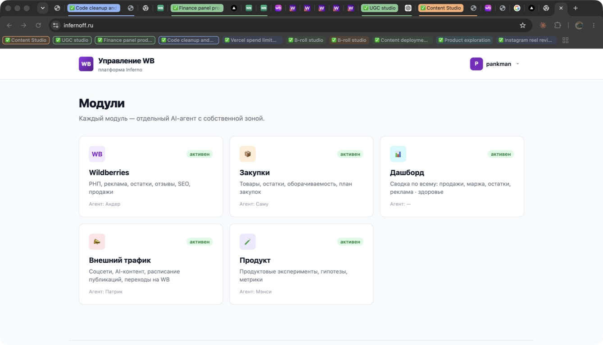
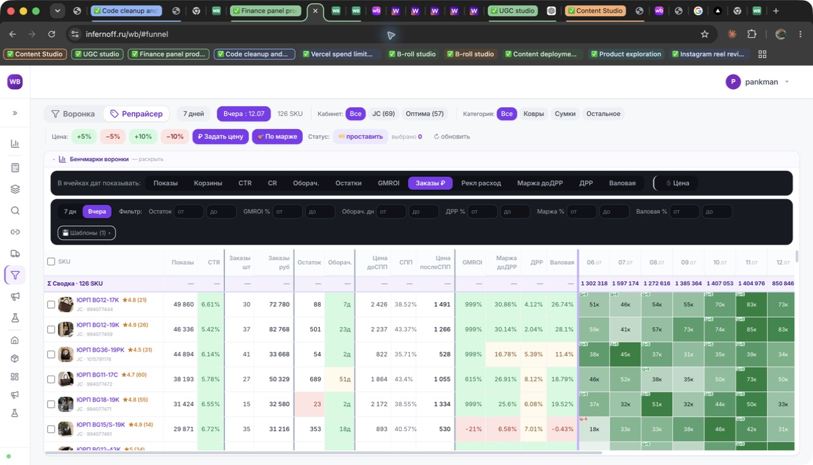
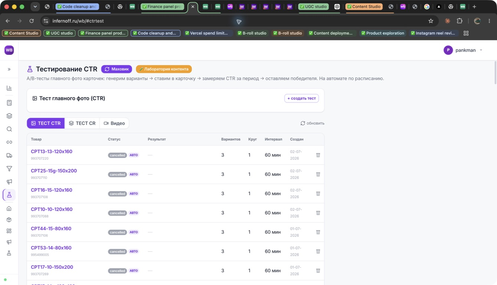
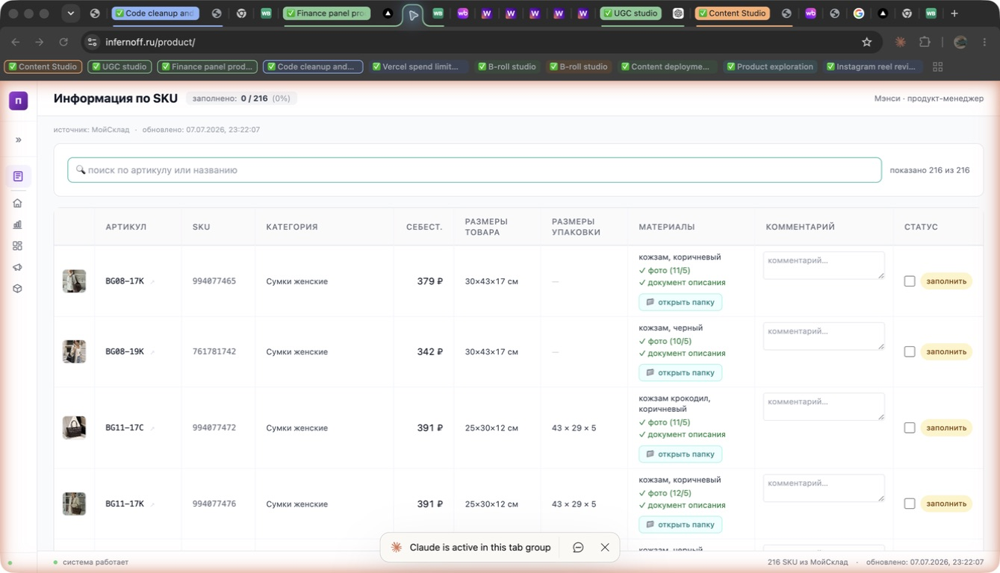
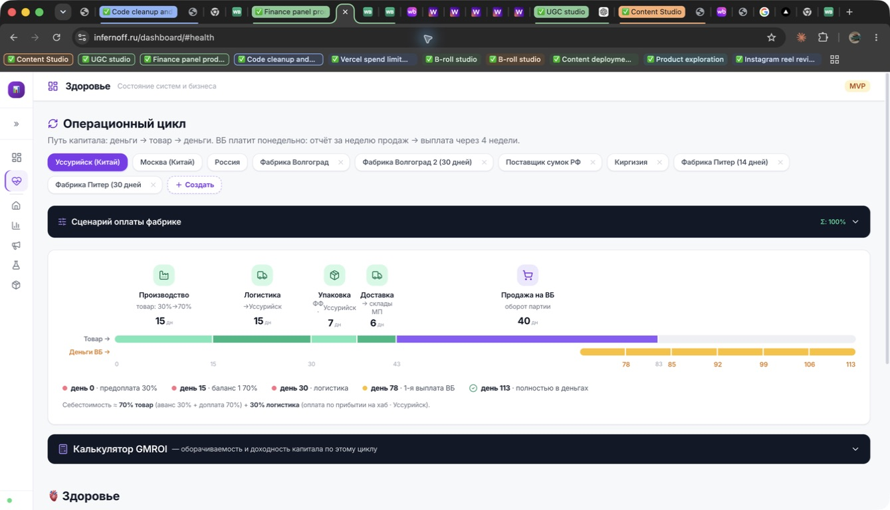
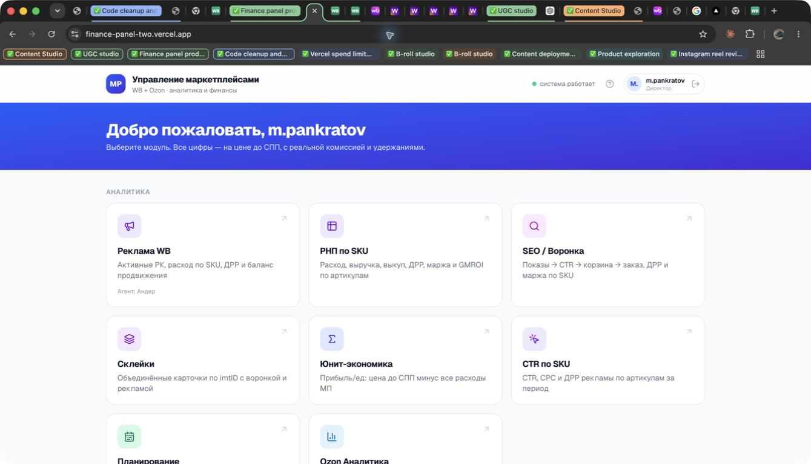
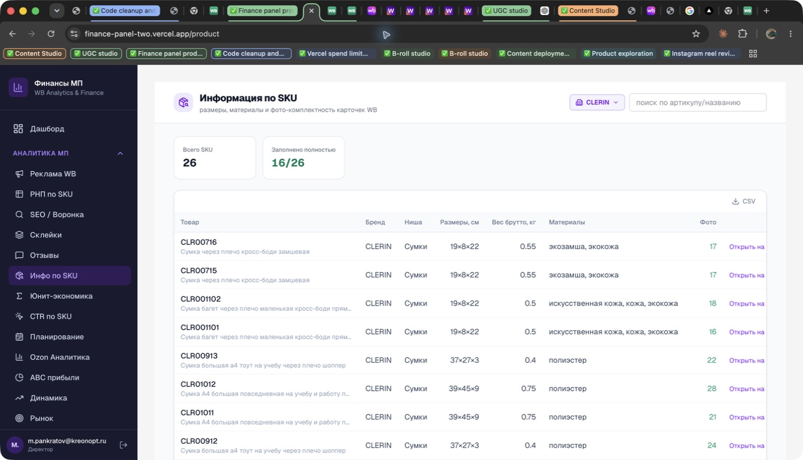
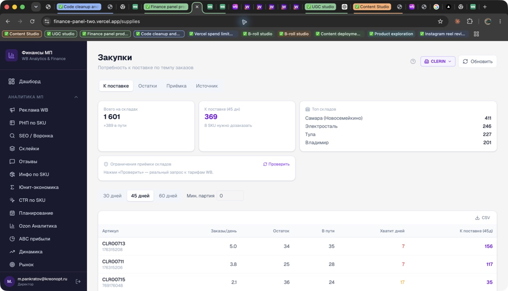
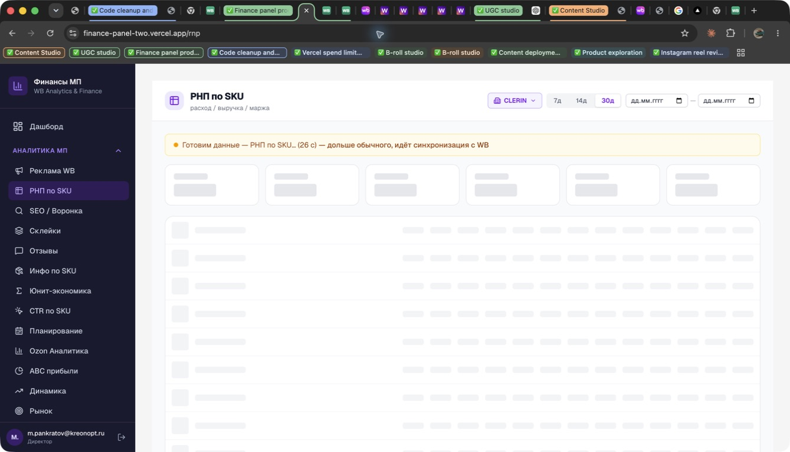
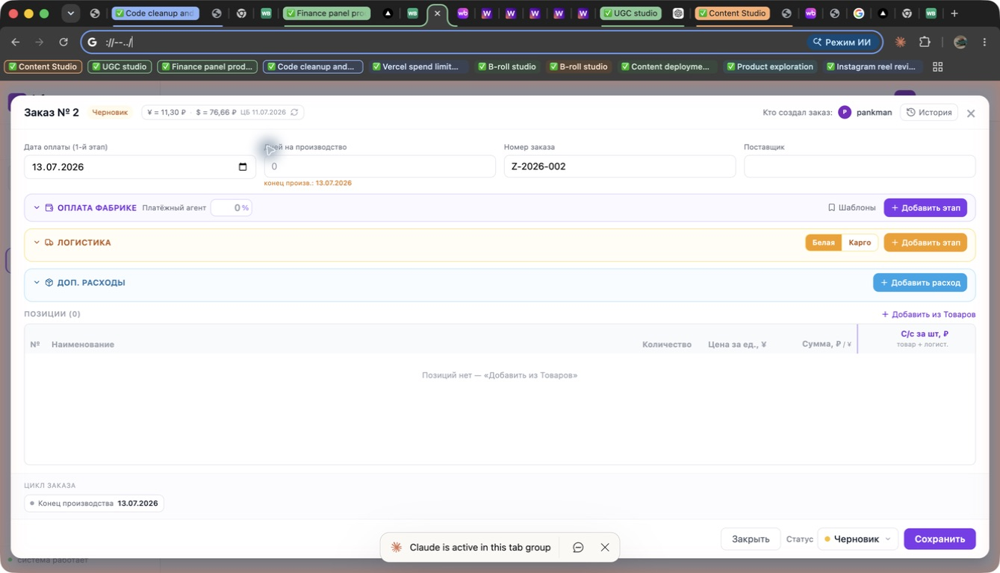
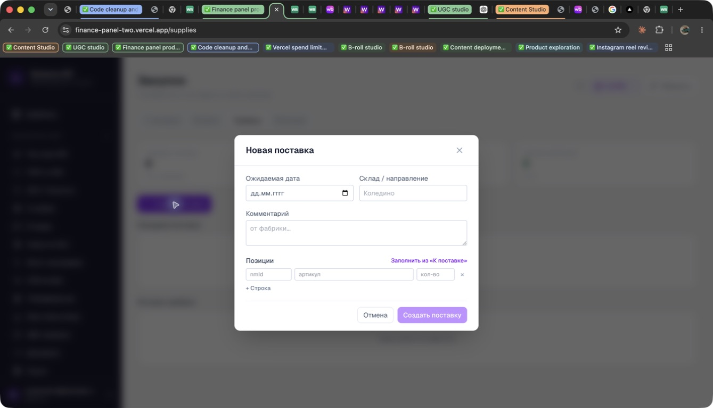
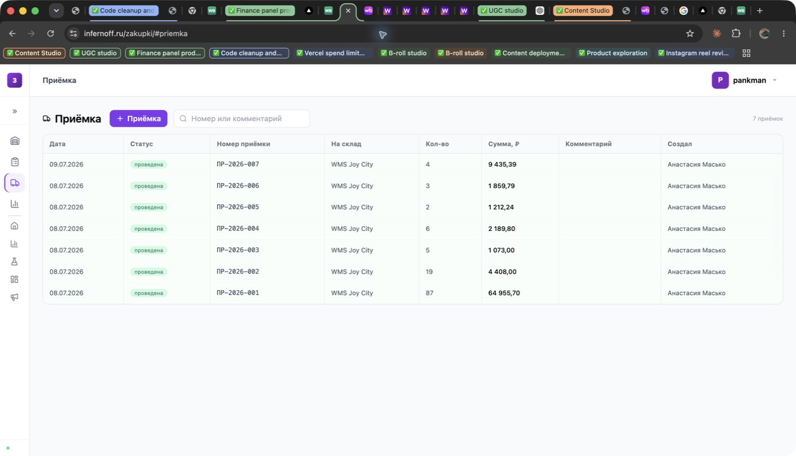
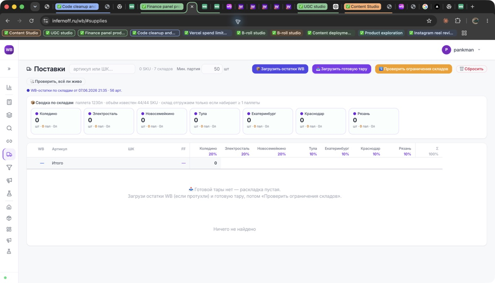
Цель не «выкинуть наше», а надеть интерфейс Inferno на более сильные части нашей архитектуры.
| Зона | Inferno | Наша панель | Решение | Приоритет |
|---|---|---|---|---|
| Shell / навигация | Компактная иконная панель, много места данным. | Тёмный широкий sidebar, понятнее, но тяжелее. | COPY В нефинансовых разделах — Inferno 1:1. | P0 |
| Главная | Спокойная сетка модулей. | Сетка хорошая, но большой синий hero. | COPY Убрать hero, сохранить наши модули и роли. | P0 |
| РНП | Плотная рабочая матрица, фильтры, сортировка. | Наши расчёты и loading лучше; UI менее плотный. | COPY Визуал Inferno + наши данные/состояния. | P0 |
| Воронка / Репрайсер | Один экран: метрики, heatmap, массовые цены/статусы. | Движок, решатель и экспорт уже есть, но разделены. | COPY Объединить UI, не объединяя серверные домены. | P0 |
| Реклама | Операционные кнопки, но hash-переход дал сбой в аудите. | Есть list/action/bid/bulk/deposit и guards. | COPY Внешний вид Inferno, наша безопасность. | P0 |
| CTR | Зрелый журнал тестов, CTR/CR/Video, лаборатория. | API/данные частично есть; живой photo-swap ограничен. | BUILD Паритет UI, live включать отдельно. | P1 |
| SKU / продукт | Drive, комментарии, статус готовности. | Лучше мастер-данные, заполненность и кабинет. | COPY+ Их вид + наши колонки + комментарии/статус. | P0 |
| Закупки | Товары → заказ → приёмка → остатки. | Потребность и простая поставка; нет заказа фабрике. | BUILD Новый операционный домен. | P0 |
| Поставки по складам | Тара, WMS, ограничения, проценты, healthcheck. | Рекомендованная потребность и ограничения WB. | BUILD Этапами; WMS/файлы требуют согласования. | P1 |
| Дашборд | Фактически заглушка. | Рабочие модули и зона внимания. | KEEP+ Только визуальная оболочка Inferno. | P0 |
| Финансы | Health/цикл интересны, общий дашборд пуст. | Полноценный ДДС, P&L, платежи, кредиты. | FROZEN Не менять в этой программе. | — |
| Ozon | Нет сопоставимого зрелого блока. | Самостоятельный аналитический модуль. | FROZEN Идеи — отдельным ТЗ позже. | — |
| UGC Studio | 5 шагов: avatar → product → script → generation → publish. | Контентные API/лаборатория есть, но другой продуктовый контур. | OPTION После WB-ядра. | P2 |
Экран обещал 30–60 секунд, но оставался в расчёте после 99 секунд. Нет retry, cancel и диагностического статуса.
При прямом переходе на #adverts UI оставался на воронке. URL и фактический экран расходятся.
Навигация видна, но пользователь получает «нет доступа» и откатывается к главной без понятного пути восстановления.
Раздел помечен MVP и содержит заглушку. Наша главная функционально сильнее.
Много icon-only элементов, мелкие цели, контрастный смысл часто передаётся только цветом.
Google Drive, готовая тара, WMS и часть ограничений требуют внешних интеграций и не могут считаться обычным WB API.
| Кодовый факт | Inferno snapshot 13.07.2026 | Вывод для нашей реализации |
|---|---|---|
| Клиент | Один HTML-файл 613 915 bytes, Alpine.js + Tailwind runtime. | Поведение повторяем, монолитный компонент не копируем. |
| Сетевой слой | 139 вхождений fetch(), около 100 уникальных API paths. | Нужен общий request client, query keys и единая классификация ошибок. |
| Асинхронность | 58 setTimeout, 6 setInterval, WebSocket/SSE отсутствуют. | Task polling централизуется; каждый poll имеет deadline и cancel. |
| Состояние | Один app(), около 341 методов, 32 обращения к localStorage. | Модули изолируются; localStorage ключи включают пользователя и кабинет. |
| Ошибки | 43 пустых catch; часть fetch не проверяет HTTP status. | Пустые catch запрещены; error boundary и typed result обязательны. |
| Быстрый рендер | Большая РНП строится через innerHTML. | Использовать virtualized React table; не переносить inline onclick/XSS-риск. |
Visual parity не должен порождать второй бэкенд. UI собирается вокруг уже существующих API; новые модели появляются только для заказов и приёмки.
| Целевой экран | Что переиспользуем | Чего не хватает | Ограничение |
|---|---|---|---|
| РНП | /api/rnp/[shop]/table, plan, unit-econ | Единый плотный view-model и sticky matrix. | Без миграции. |
| Воронка | /api/seo/skus, /api/design/day-metrics, /api/signals | Категорийные бенчмарки и сохранённые фильтры. | Возможна существующая таблица настроек. |
| Репрайсер | /api/repricer/*, /api/unit/price-solver, XLSX export | Inline bulk actions и объяснимость в матрице. | Живые цены остаются human-in-the-loop. |
| Реклама | /api/adverts/list, action, bid, bulk, deposit | UI parity и единый журнал действий. | Write-token и подтверждение денег. |
| CTR | /api/ctrtest/*, /api/lab/* | Оркестратор вариантов, экраны CR/Video/Маховик. | Photo swap live — отдельный гейт. |
| SKU | Content/SEO/Drive/Yandex/Lab источники. | Комментарий, ручной статус, единая полнота. | Drive OAuth — отдельная интеграция. |
| Закупки | /api/supplies, restrictions, localization, healthcheck | Заказ фабрике, этапы, расходы, позиции, receipt ledger. | Новые таблицы → ручное одобрение владельца. |
| WMS / тара | wms-ready и существующие заглушки-контракты. | МойСклад adapter, XLSX parser, idempotency, retries. | Ключи и внешняя система; отдельный PR. |
purchase_orders, purchase_order_items, purchase_payment_stages, purchase_logistics_stages, purchase_expenses, receipts, receipt_items, operation_audit_log. Все записи получают cabinet_id, автора, статус, timestamps и idempotency key.
В существующем репозитории уже 115 Route Handlers. Массово переписывать их ответы нельзя: новый WB-shell использует адаптеры, а единый envelope обязателен только для новых endpoints.
[domain, cabinetId, filters].cabinet_id.AbortController и request sequence защищают от устаревшего ответа.| Операция | Контракт | UI-состояние | Защита |
|---|---|---|---|
| Обычное чтение | 200 + data/meta; stale data может оставаться на экране. | Фоновый progress рядом со свежестью данных. | Отмена при cabinet/filter change. |
| Подготовка | 202 или status=preparing + task ID + progress. | 0–10 сек skeleton; 10–60 сек объяснение; после 60 сек retry/cancel. | Максимальный срок и прекращение polling. |
| Частичные данные | status=partial + список недоступных источников. | Таблица показывается, отсутствующие метрики отмечены. | Не подменять null нулём. |
| Write preview | Расчёт изменений без применения. | Modal показывает количество SKU, суммы, старое → новое. | Один кабинет, роль, cap и server validation. |
| Write execute | Idempotency key + audit ID + результат по каждой строке. | Успехи и ошибки отображаются раздельно. | Повтор запроса не создаёт второе действие. |
| Ошибка доступа | 401 → login; 403 → кабинет/роль; 409 → конфликт; 429 → retry-after. | Понятная причина и следующий шаг. | Никаких пустых catch и пустых таблиц. |
В Inferno loadTable() повторяет RNP-запрос каждые 5 секунд без лимита, пока сервер отвечает preparing. В нашей реализации polling имеет deadline, cancel, retry и диагностический task ID.
Удаление не является первым шагом. Сначала новый экран получает parity, затем старый маршрут становится redirect, и только после стабильного релиза удаляется дублирующий UI.
Один из двух главных экранов: ModulesHome или неиспользуемый DashboardPage. После единого shell также удаляется дублирующий ModuleMenu.
ABC + trends + market; costs + price solver + repricer; cabinets + users + sync. API и расчёты остаются отдельными.
31 Inferno-style Route Handler без текущего UI и большинство /api/lab. Они являются заготовкой нового WB-кокпита, а не мусором.
| Объект | Сейчас | Действие | Условие удаления |
|---|---|---|---|
ModulesHome | Текущая главная-каталог, дублирует sidebar. | Заменить рабочим дашбордом Inferno-style. | Главная прошла role/access E2E. |
DashboardPage | Не импортируется ни одной страницей. | Использовать как основу либо удалить. | Выбран канонический дашборд. |
ModuleMenu | Отдельное меню внутри Ozon. | Не трогать Ozon в P0; удалить только при отдельном согласовании общей оболочки. | Ozon больше не зависит от компонента. |
| Старые WB routes | Разрозненные самостоятельные страницы. | Redirect на соответствующую вкладку /wb. | Один стабильный релиз + отсутствие внешних ссылок. |
| Inferno API namespaces | Часть не имеет видимого UI. | Промаркировать владельца и связать с экраном. | Удалять только endpoint без caller, job и внешнего потребителя. |
| Creatify/post utilities | Нет видимых UI-caller. | Отдельный cleanup-аудит по логам. | 30 дней без внешних вызовов. |
| SQL migrations | История состояния БД. | НЕ УДАЛЯТЬ | Не применимо. |
| Финансы и Ozon | Рабочие самостоятельные продукты. | FROZEN | Только отдельное новое ТЗ. |
Фильтр позволяет посмотреть только нужный приоритет. Каждый эпик — отдельная ветка и PR.
Sidebar, topbar, глобальный cabinet provider, URL/deep-link, scopes, свежесть данных, общие loading/error/empty states.
Первый production-экран: toolbar, кабинет, периоды, планы, sticky matrix, mobile cards, подготовка данных и восстановление.
Planning, tasks, SEO, склейки, Unit, ABC, trends, market, reviews и product в едином /wb.
Один UI с вкладками, category benchmark, metric switcher, day heatmap, bulk price/status.
Visual parity списка РК и SKU: ставки, баланс, расход, массовые действия и история.
Полный drawer Inferno: дата, срок производства, поставщик, оплаты, логистика, допрасходы, позиции и статусы.
Журнал документов, проведение партий, расхождения plan/fact, обновление доступного остатка.
Проценты складов, минимальная паллета, ограничения, исключения SKU и экспорт.
Парсер containerscontent.xlsx, МойСклад adapter, dry-run, healthcheck и idempotent create.
Список Inferno, мастер теста, variant rotation, метрики, победитель, отмена и маховик.
Вид Inferno с нашими мастер-данными, комментариями, readiness, фото completeness и Drive link.
Пятишаговый flow Inferno поверх существующих lab/content API.
Цикл заказа как timeline и healthcheck сервисов без изменения финансового блока.
| Проверка 1:1 | Размер | Pass | Маскирование |
|---|---|---|---|
| Desktop reference | 1440×900 и 1280×800 | Ключевая геометрия shell/toolbar/table ≤2 px; общий pixel diff ≤6%. | Только динамические фото, даты, суммы и scrollbar. |
| Compact desktop | 1024×768 | Rail схлопнут; рабочая таблица не перекрывается; все действия доступны. | Динамические данные. |
| Mobile reference | 375×812 | Drawer navigation, карточки вместо широкой матрицы, нет горизонтального scroll body. | Динамические данные и системная строка браузера. |
| Typography | Все размеры | Font family, weight, line-height, tabular numerals и casing совпадают с токенами. | Нет. |
| Interaction parity | Mouse + keyboard | Одинаковые порядок фильтров, раскрытия, sort direction, modal/drawer и возврат назад. | Нет. |
| Multi-cabinet E2E | Начальное условие | Действие | Ожидаемый результат |
|---|---|---|---|
| Переключение A → B | Пользователь имеет два WB-кабинета. | Переключить кабинет во время незавершённой загрузки РНП. | Запрос A отменён/игнорирован; URL и таблица показывают только B. |
| Deep link | Сохранён кабинет A, URL содержит B. | Открыть ссылку /wb/seo?cabinet=B. | Открывается SEO кабинета B; URL имеет приоритет. |
| Forbidden cabinet | Менеджеру разрешён только A. | Подставить ID кабинета B вручную. | 403, данные B не попадают в HTML/JSON; UI возвращает A. |
| All + write | Выбран режим «Все кабинеты». | Открыть deposit/bid/supply action. | Действие заблокировано до выбора одного кабинета. |
| Cabinet settings | У A и B разные tax/cap/warehouse settings. | Переключаться между Unit, Ads и Supplies. | На каждом экране используются настройки текущего кабинета. |
| Task recovery | В A запущена генерация, затем выбран B. | Обновить страницу и вернуться в лабораторию. | Задача A не показывается в B; после возврата в A восстанавливается. |
Фильтр/сортировка дают feedback ≤100 ms; 150–300 ms transition.
100+ строк виртуализируются; предыдущий fetch отменяется.
Skeleton сразу; stale data сохраняется при фоновом refresh.
URL priority, permissions, query keys, settings namespace, formatters и metric thresholds.
Два кабинета, 403, aggregate allowlist, preview/execute, idempotency и audit.
Каждый экран открывается с кабинетом; РНП, реклама, поставка, CTR, deep-link и switch-race проходят полностью.
Reference screenshots хранятся по экрану и кабинету с масками динамических зон.
Маршруты и reference screenshots подтверждают отсутствие изменений.
Не начинать со сложной WMS. Сначала закрепить визуальный shell и перенести уже существующие данные, затем достроить операционный домен.
Подтвердить, что разработка идёт от ветки, содержащей актуальные WB-страницы деплоя, и синхронизировать её с защищённым main.
Один PR: /wb, sidebar, topbar, cabinet URL/state, permissions, freshness и общие состояния. Без новых таблиц.
Довести один экран до visual/functional parity на desktop, compact и mobile. Стиль фиксируется только после ревью владельца.
Planning → tasks → Unit → SEO → склейки → воронка → product. Переиспользовать API и утверждённые компоненты РНП.
Реклама → репрайсер → поставки. Preview/execute, один кабинет, guards, idempotency и audit обязательны.
Сначала UI, task recovery и dry-run; живой photo-swap и рекламный расход включаются отдельным гейтом.
Отдельное согласование миграций и credentials. Сначала ручной жизненный цикл, затем внешние интеграции.
Старые UI-маршруты переводятся на /wb; дублирующие компоненты удаляются только после стабильного релиза.